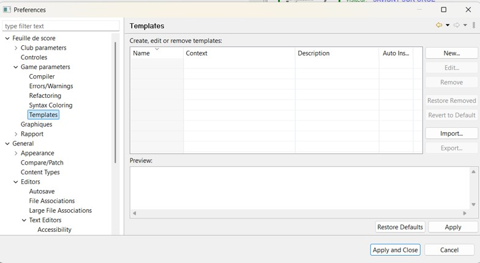

Les templates
Les templates sont des modèles de saisie prêts à l’emploi. Ils insèrent en une seule opération une structure
complète, par exemple un joueur ou une action de jeu type, dans laquelle il ne reste qu’à compléter les champs variables. Ils sont
proposés avec l’auto-complétion.
Les templates ne sont pas figés : chaque utilisateur peut les définir et les adapter à sa façon de travailler,
depuis les préférences de l’éditeur. Il peut en créer de nouveaux, modifier ceux qui existent, les supprimer, les importer ou les
exporter pour les partager avec d’autres utilisateurs.
Voici comment crée un nouveau template:
-
Ouvrir les préférences de l’outil, puis la page Templates de l’éditeur concerné (match ou équipe).

-
Cliquer sur Nouveau… pour ouvrir la fenêtre de création.

Renseigner le nom du template. C’est ce nom qui sera tapé, puis proposé par l’auto-complétion.
Renseigner une description, affichée dans la liste des propositions pour aider à choisir le bon
template.
Choisir le contexte, qui détermine l’endroit où le template pourra être utilisé.
Saisir le modèle (le texte qui sera inséré). Les parties variables à compléter par l’utilisateur sont
écrites sous la forme ${nom} et le curseur peut être positionné avec ${cursor}.
Valider avec OK, puis Appliquer
Le template est ensuite disponible immédiatement : il suffit de taper son nom puis d’appeler l’auto-complétion (Ctrl+Espace).
Le fonctionnement de la page des templates est identique dans tout Eclipse. Pour une description détaillée des boutons et des
options, consulter l’aide d’Eclipse.